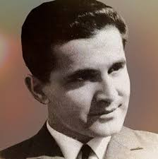

Safet Isović
1936–2007 · Bileća
Safet Isović
Interpretator sevdalinke snažnog i prepoznatljivog glasa.
Mjesto rođenja
Bileća
Izdvojena pjesma
Snijeg pade na behar
Od audicije do koncertnih pozornica
Safet Isović rođen je 1936. godine u Bileći. Tokom odrastanja živio je u više gradova, a 1955. godine dolazi u Sarajevo na studij prava. Tu se uključuje u muzički život i pjeva u studentskom društvu „Slobodan Princip Seljo“.
Na nagovor kolega izlazi na audiciju Radio Sarajeva. Prvi snimci emitovani su 1957. godine, a radijska karijera postaje osnova njegovog kasnijeg koncertnog i diskografskog rada.
Njegov repertoar obuhvata brojne sevdalinke i druge narodne pjesme. U ovoj zbirci predstavljaju ga „Snijeg pade na behar“ i „Mujo kuje konja po mjesecu“. Nastupao je i snimao s drugim poznatim pjevačima i muzičarima svoje generacije.
Preminuo je u Sarajevu 2007. godine. Sačuvani snimci njegovog pjevanja pokazuju koliko melodijski ukrasi i oblikovanje dugih tonova mogu biti važni za doživljaj sevdalinke.
Više o izvođaču: izvor biografskih podataka ↗.
Poslušaj izvedbu
Snijeg pade na behar
Jedna od narodnih pjesama u njegovom repertoaru. Poslušaj način na koji razvija melodiju na kraju stihova.